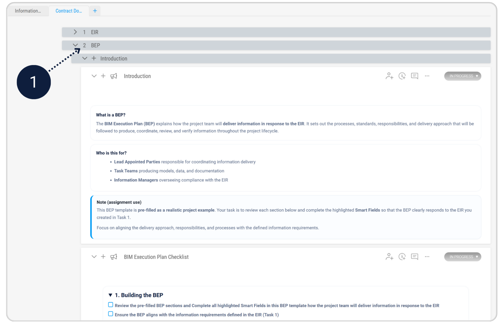
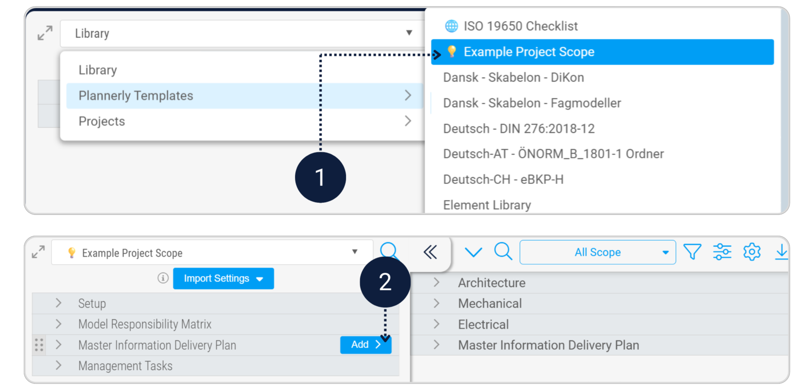
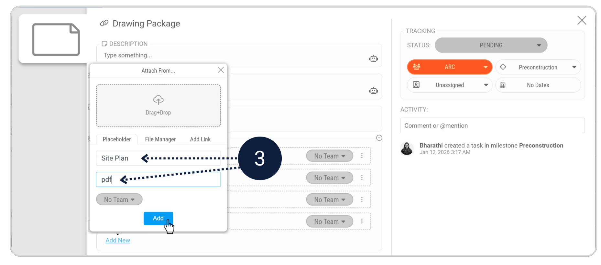
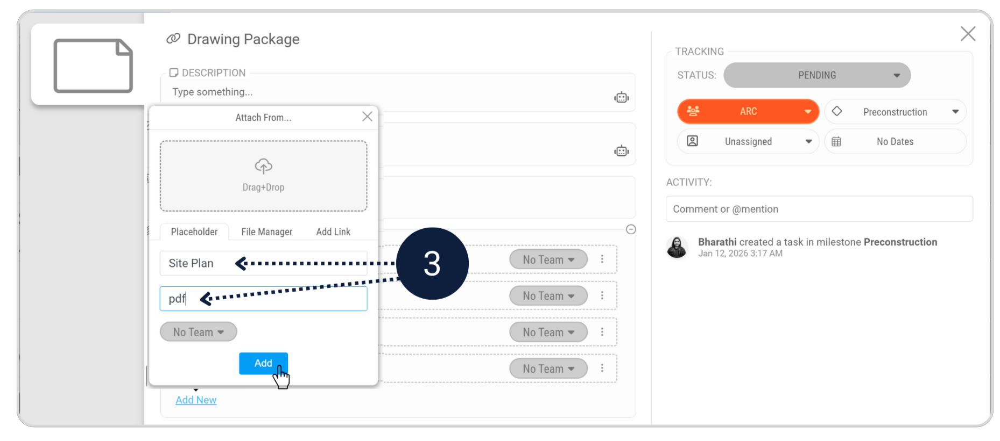
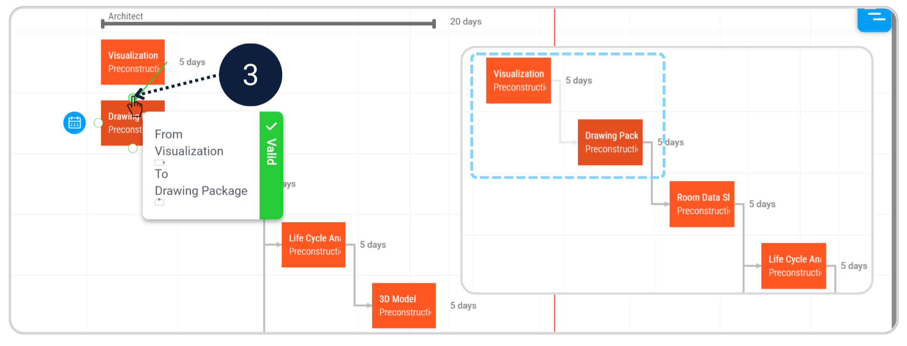
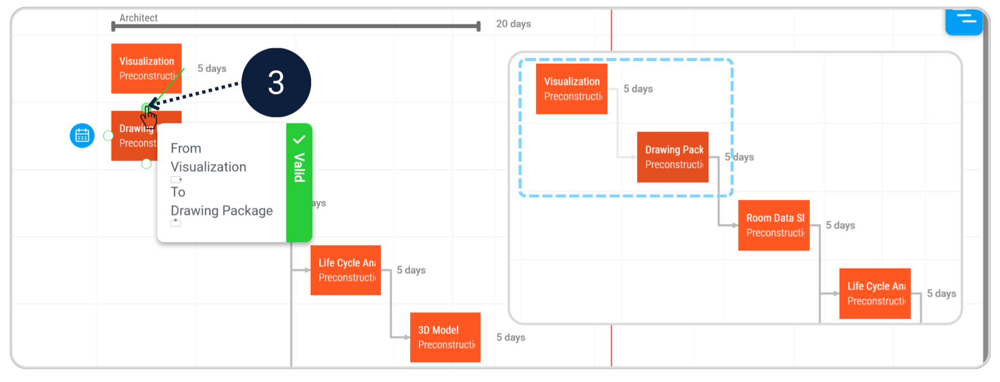

Turn requirements into a delivery plan the team can follow.
You are now stepping into the role of the Lead Appointed Party. In this task, you’ll translate the Owner’s EIR into a coordinated plan that makes delivery clear - what gets delivered, who delivers it, and when. You’ll also set up Work Packages so models can be verified against the agreed requirements later.
[Image of relationship between EIR and BEP in ISO 19650]What you will do
1. Create the BEP
Define how the team will collaborate and deliver information.
2. Set up the MIDP
Organise deliverables by milestone - including document placeholders.
3. Create Work Packages
Group tasks and link the correct demo models for verification.
Step 1 - Complete the BIM Execution Plan (BEP)
Module - DocsAccess the pre-filled BIM Execution Plan (BEP) document provided in the Contract Documents.
This document already contains the required structure and guidance for this assignment. Your task is to work through the BEP and complete the highlighted Smart Fields.
- Review the pre-filled BEP sections
- Complete all highlighted Smart Fields in the BEP template
- Ensure the BEP aligns with the information requirements defined in the EIR (Task 1)
To complete the BIM Execution Plan, go back to the "BEP" section in the Contract Document.
Step 2 - Create the Master Information Delivery Plan (MIDP)
Module - ScopeThe MIDP organises what will be delivered, by whom, and when. It turns scope tasks into a delivery schedule. For this assignment, you’ll import an example MIDP from the Plannerly library to speed things up.
- Import the MIDP: Scope > Add From Library > Plannerly Templates > Example Project Scope > Master Information Delivery Plan (MIDP) > Add
- Reorder milestones so Pre-Construction is above Operation (recommended).
- In the Drawing Package task, add one document placeholder: Site Plan.pdf.
Add the MIDP in the Scope from the Plannerly Library.

Click on a Milestone, drag Pre-Construction to the top.

To complete the Drawing Package, add one additional non-geometric document placeholder: Site Plan.pdf
 


Switch to Timeline view and connect the remaining tasks.
Example: Create a dependency between Visualization → Drawing Package.
[Image of Gantt chart dependencies in construction] 

Step 3 - Create Work Packages and assign models
Modules - Scope + VerifyWork Packages group related deliverables and connect your Scope tasks to real models in Verify. This is what prepares the team to check whether the model meets the agreed information requirements.
[Image of BIM work package structure]Make sure every task is assigned to a delivery team. The imported MIDP is already assigned to Architect and Contractor teams. For the tasks you created in Task 1, assign each task to the appropriate team (Architect or Contractor).


- Create a Work Package filtered to Architect team named Architecture WP.
- Create a Work Package filtered to Contractor team named MEP WP.
- Assign demo models: Architecture WP → Plannerly-Arc.rvt, MEP WP → Plannerly-MEPF.rvt.
- In All Scope, add a new Work Package filtered to the Architect team and name it Architecture WP.
- Add a second Work Package filtered to the Contractor team and name it MEP WP.

- Architecture WP → Assign Plannerly-Arc.rvt (demo model)
- MEP WP → Assign Plannerly-MEPF.rvt (demo model)
Final deliverable checklist
- The BEP is completed and reflects the EIR and project delivery approach.
- The MIDP is imported, milestones are ordered clearly, and Site Plan.pdf is added as a document placeholder.
- Architecture WP and MEP WP exist and are linked to their correct demo models.
- You exported your completed BEP document - including the MIDP with timeline - in File Manager.
Export your completed BEP document, including the MIDP with Timeline in File manager as a single Appointment document.